Produtos com variações e limite de variações por produto
No cadastro de produtos do ERP da Olist, você cria um produto pai do tipo Com variações, monta níveis (como cor e tamanho) e gera a grade de combinações. Cada combinação pode ter SKU, preço e estoque próprios.
A mesma inclusão também pode começar por planilha, pela transformação de produtos já cadastrados ou pelo recebimento de anúncios de uma loja conectada. O sistema avisa quando o número de variações do produto passa de 200.
Pré-requisitos
- Se a opção não aparecer para você, peça acesso ao administrador da conta.
- Para transformar produtos já cadastrados, marque ao menos um produto na listagem.
- Para receber do ecommerce, a loja precisa já estar conectada. O campo Integração lista as lojas disponíveis.
Importante
- O número de variações adicionadas ao produto não pode ser maior que o limite de 200.
- Depois de cinco níveis confirmados, o link Adicionar outra variação deixa de ser exibido.
- Em Alterar regras, a alteração vale para variações já existentes. Ajuste as regras antes de salvar o pai.
- Em Configurações de variações de produtos não há campo para mudar o limite de 200.
- Na planilha, o arquivo aceita Excel.xls ou.xlsx, ou CSV, com no máximo 2 Mb. A ajuda cita até 500 registros.
Instruções
Pela tela
-
Acesse Cadastros > Produtos.
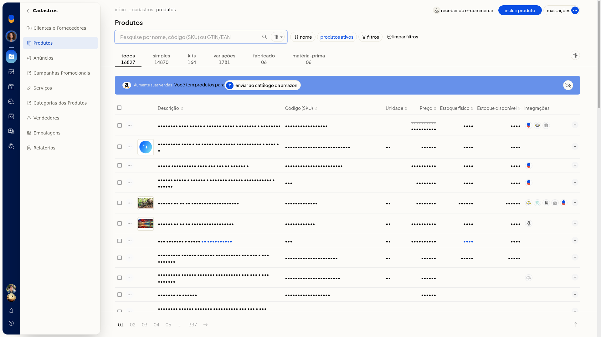
-
Clique em Incluir produto.
-
Em Tipo do Produto, selecione Com variações.

-
Preencha os dados gerais do produto pai. Confirmar um nível de variação não grava o produto.
-
Na aba Variações, informe o nome do nível e os valores. Separe os valores por vírgula ou tab, como no exemplo P, M, G.
-
Confirme o nível. Os valores passam a aparecer como chips e a grade ganha uma linha por combinação.
-
Repita para os outros níveis. Depois de cinco níveis confirmados, Adicionar outra variação deixa de ser exibido.
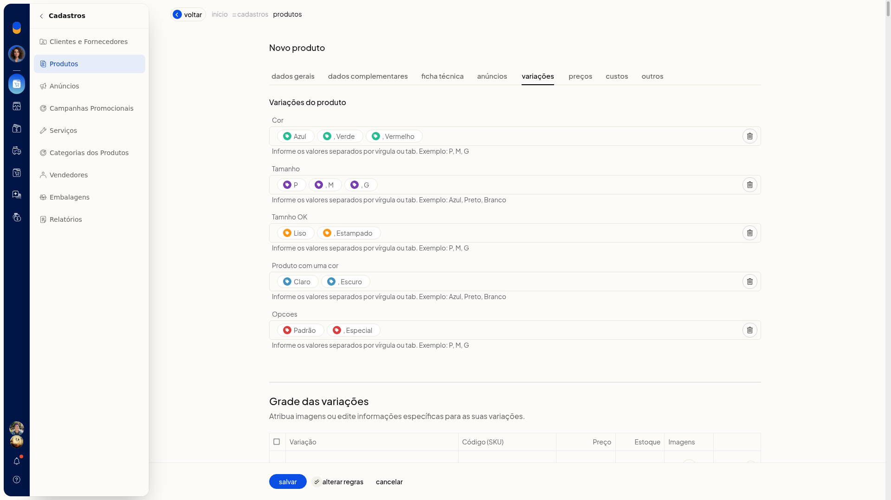
-
Se a quantidade passar do limite, feche o aviso O número de variações adicionadas ao produto é maior que o limite de 200 permitido pelo sistema. O formulário continua aberto e nada é gravado.
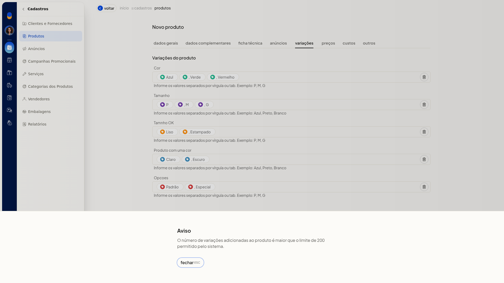
-
Na grade, use editar na combinação que quiser ajustar. No modal Novo Produto, preencha Código (SKU), GTIN/EAN, Peso líquido, Peso bruto, Preço, Preço promocional, Situação (Ativo ou Inativo) e Estoque inicial. Pesos e preços usam vírgula decimal. Feche sem salvar se não quiser alterar a grade.
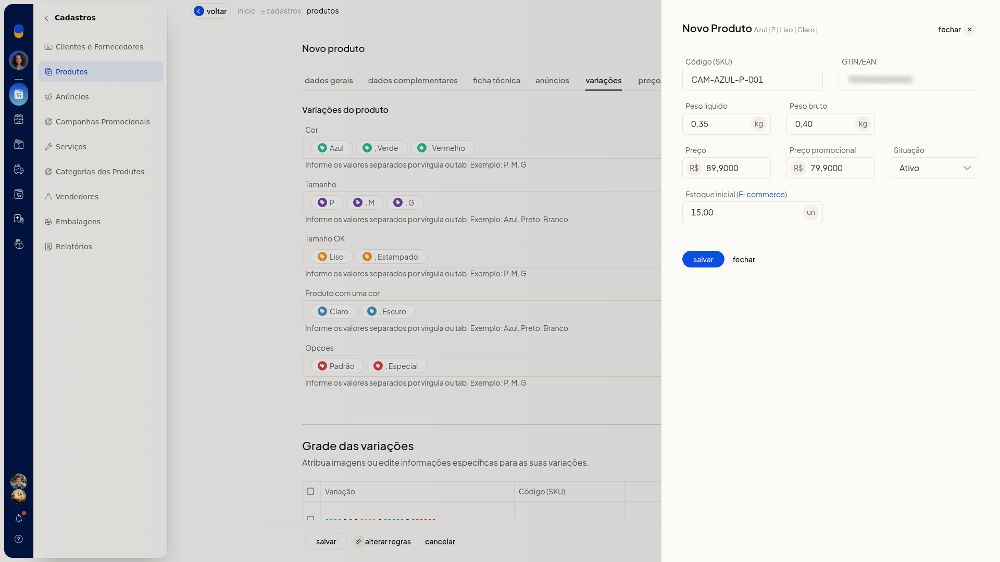
-
Em Alterar regras, marque o que pode diferir entre as variações. Podem estar marcados NCM, Unidade, Embalagem e dimensões, Estoque mínimo e máximo, Descrição complementar e Tags. Podem estar desmarcados GTIN/EAN, Preço de venda, Preço promocional, Peso e volumes e Localização. Cancele se não quiser aplicar.
-
Clique em Salvar para gravar o produto pai com a grade. Cancelar volta à listagem sem criar o produto.
Por planilha
-
Acesse Cadastros > Produtos.
-
Abra Mais ações e clique em Importar produtos de uma planilha.
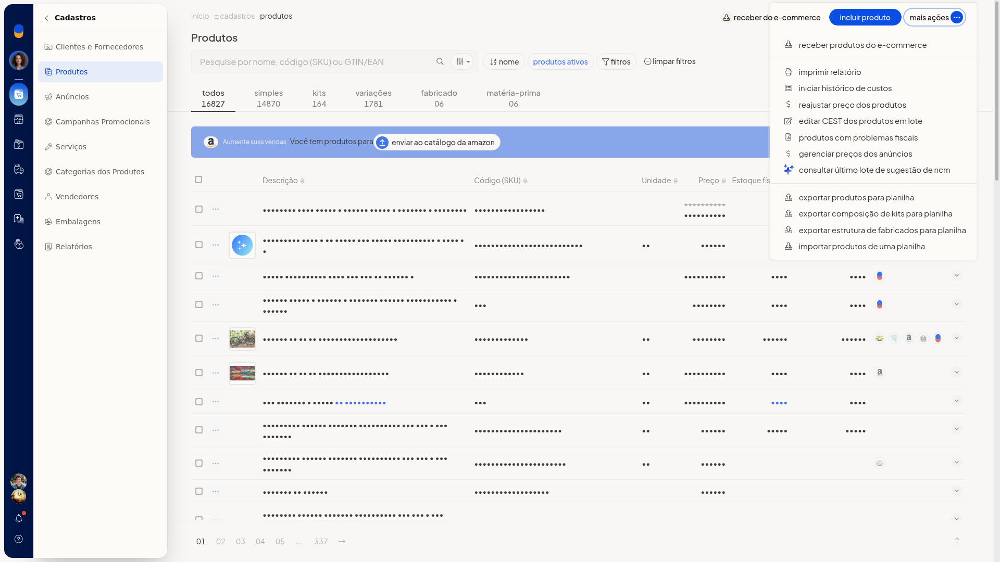
-
Baixe a planilha.
-
Preencha o arquivo. O pai usa Tipo de Produto V e não tem estoque próprio. O filho usa S, K, F ou M, nunca V. O Código do Pai do filho é o SKU do pai. Informe as variações no formato Nome:Valor||Nome:Valor, por exemplo Tamanho:GG||Cor:Branco. O SKU precisa ser manual. As colunas obrigatórias citadas na ajuda são Descrição, Sob Encomenda e Situação.
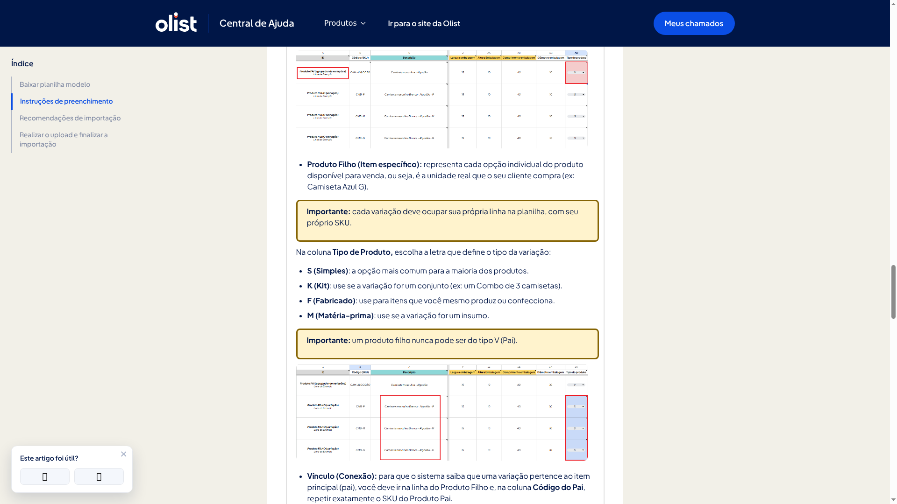
-
Envie a planilha em Excel.xls ou.xlsx, ou CSV, com no máximo 2 Mb.
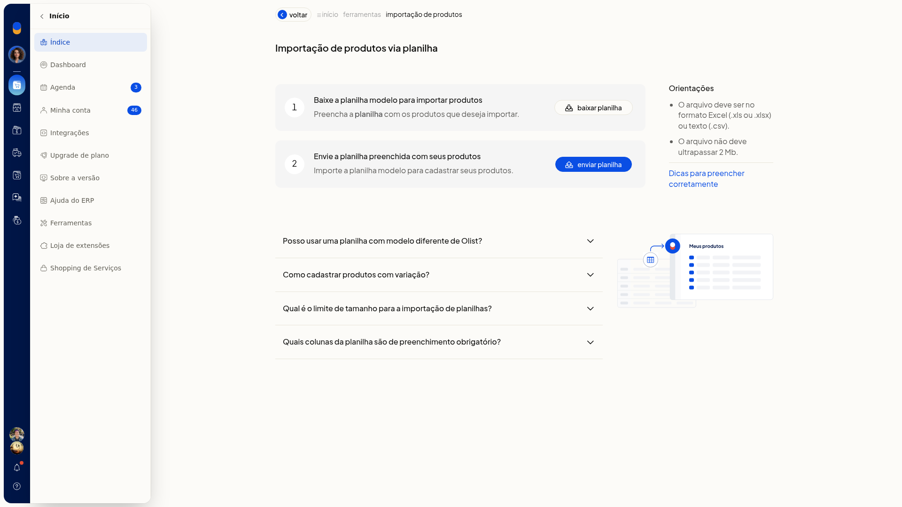
Transformar produtos em variações
-
Acesse Cadastros > Produtos.
-
Marque um ou mais produtos. A ação não aparece no menu da linha nem no Mais ações do cabeçalho.

-
Na barra de seleção, abra Mais ações e clique em Transformar em variações.
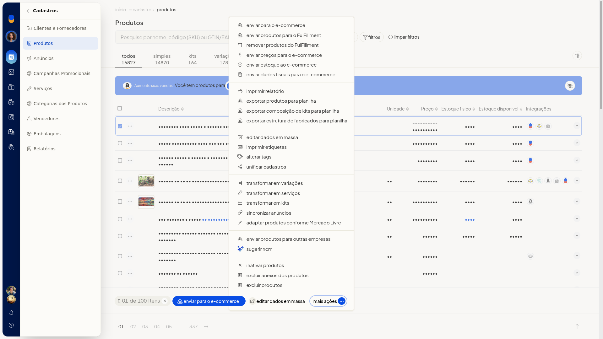
-
Escolha Criar novo produto pai ou Utilizar produto pai existente. Criar novo produto pai vem selecionado.
-
Clique em Continuar. Cancelar abandona o fluxo sem alterar os produtos.
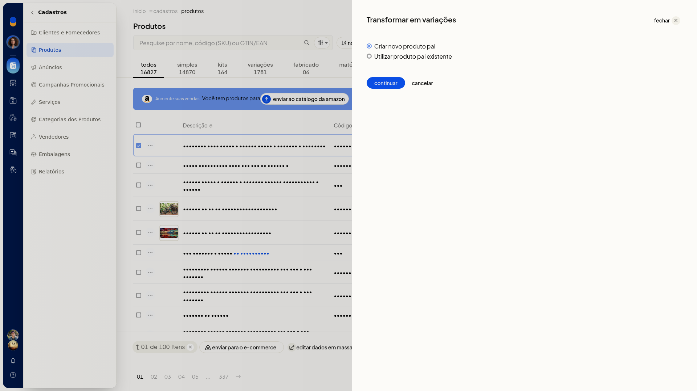
-
Para um pai novo, em Informe os dados do produto pai, preencha Descrição, Código (SKU), Origem, NCM, Preço de venda, Unidade e GTIN/EAN. Voltar retorna à escolha sem gravar.

-
Clique em Salvar produto para concluir com o pai novo.
-
Para um pai já existente, selecione Utilizar produto pai existente e clique em Continuar.
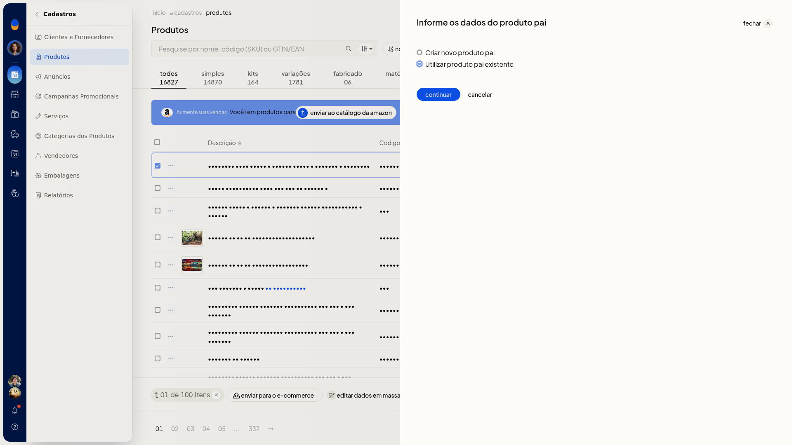
-
Em Selecione o produto pai, busque em Produto pai e clique em Selecionar produto. Voltar retorna sem gravar.
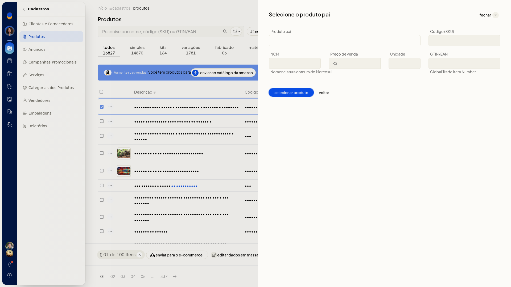
Receber do ecommerce
-
Acesse Cadastros > Produtos, sem produto marcado.
-
Clique em Receber do e-commerce. O mesmo início está em Mais ações > Receber produtos do e-commerce.
-
Na janela Receber produtos do e-commerce, confira Consumo de anúncios e Anúncios restantes.
-
Em Integração, selecione a loja já conectada. Ao continuar, você segue para a nova tela de anúncios.
-
Clique em Avançar para seguir à tela de anúncios da integração escolhida. Fechar a janela dispensa o recebimento sem importar.
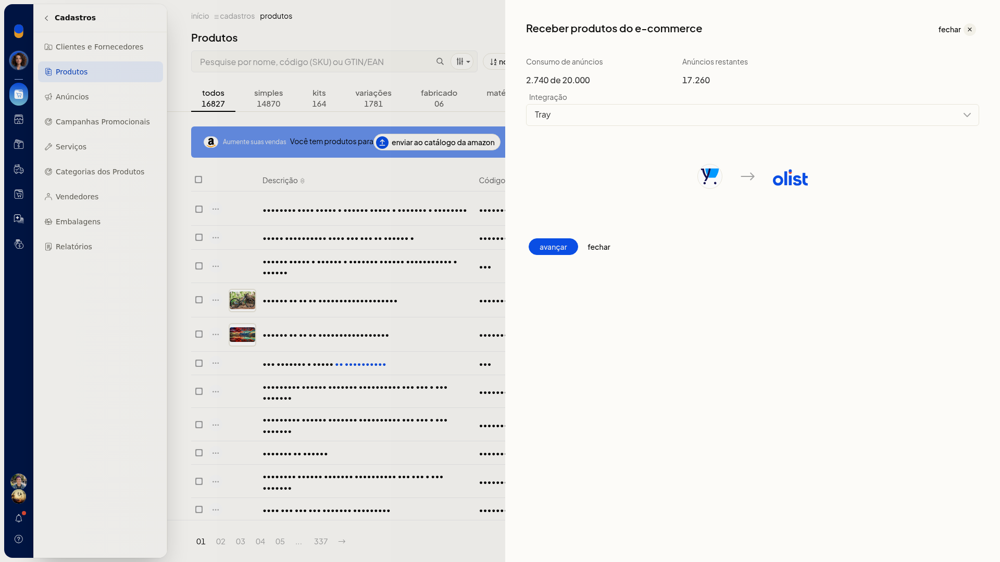
Catálogo de tipos de variação
-
Acesse Configurações > Configurações ERP > Configurações do Sistema ERP > Cadastros > Configurações de variações de produtos.
-
Na tela Variações dos produtos, consulte Nome da Variação e Valores. Use a busca se precisar. Não há campo numérico de limite por produto.
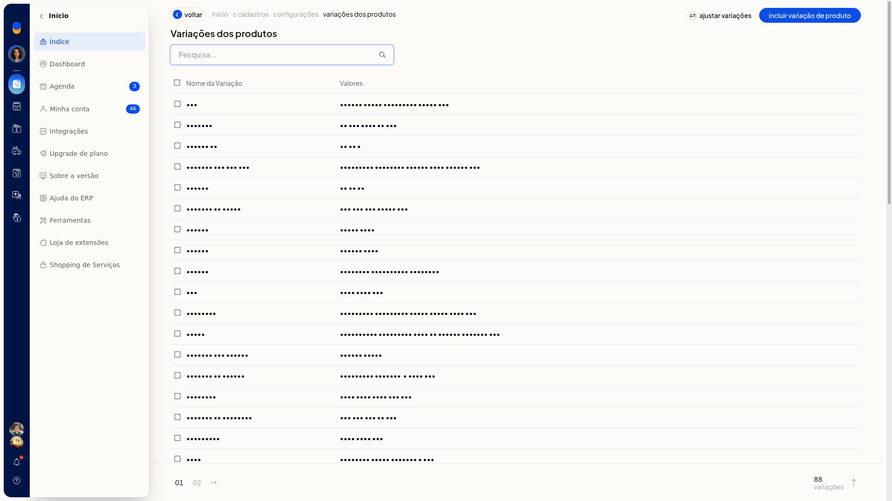
-
Clique em Incluir variação de produto.
-
Preencha Nome e Valor. O valor também aceita itens separados por vírgula ou tab.
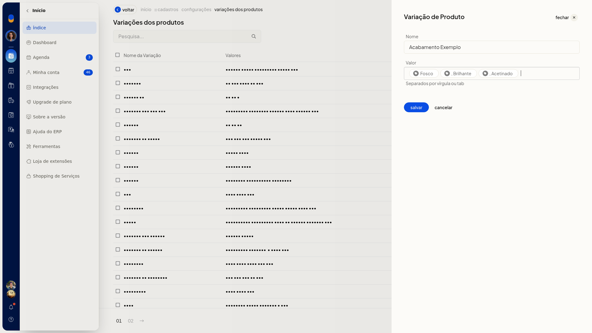
-
Salve o tipo para incluí-lo no catálogo. Cancele se não quiser gravar.
-
Em Ajustar variações, escolha Variação Origem e Variação Destino e marque os valores.
-
Mova os selecionados para transferir os valores. Cancelar fecha sem mover.
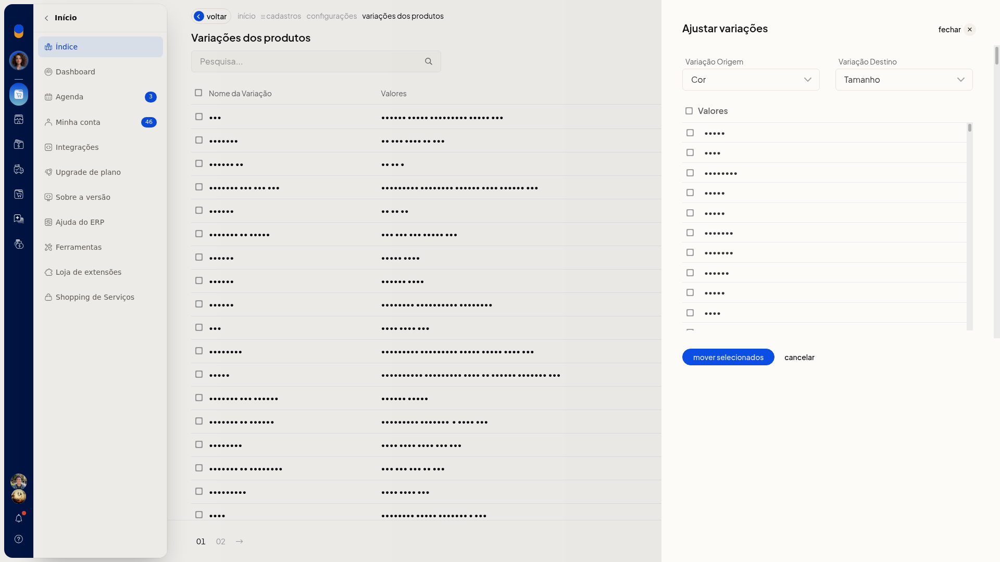
Resultado
Na listagem, a aba Variações separa os produtos com variação. No produto pai, o indicador aparece no formato (N variações). Antes de salvar, a aba Variações mostra os níveis em chips e a grade de combinações.
Informações adicionais
- O limite de 200 por produto não é configurado em Configurações de variações de produtos.
- A ajuda da planilha não informa o limite de 200.
- Interface/Tela: criar sim, atualizar sim
- Lote (Planilha): criar sim, atualizar sim
- API V3: criar sim, atualizar sim
- Lis: criar sim, atualizar sim